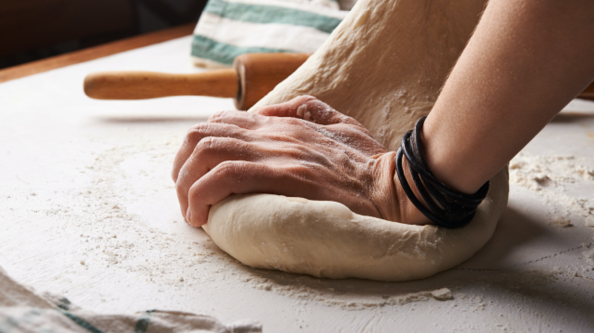

Our bread and pastry are made according to authenticated recipe with local ingredients and preparation that includes a lot of effort and manual work of our diligent bakers. In addition to that, we also use the traditional fired-clay ovens which give our products a unique taste which we all remember from our childhood. And only by respecting the knowledge and experience of the former generations can we make bread that would make our ancestors proud.
Carefully chosen types of flour ground locally, water refined by a special method of whirling in order to gain the properties of natural spring water, carefully cultivated natural starters and sourdoughs and a slight touch of high-quality modern technology. Only the best ingredients and methods are good enough for bread fromBakeology, bread crowned by quality.

Even today, we still cherish the recipes and methods of bread baking which our founder conceived more than 60 years ago and we constantly upgrade them according to new knowledge on nutrition and customer demand. In a specially arranged small bakery we knead and bake samples of bread and pastry in order to improve some of the existing products or to develop completely new ones. This is how we came to produce our unique and innovative products such as whole grain delicacy bread, bacon rolls, hot sandwiches...